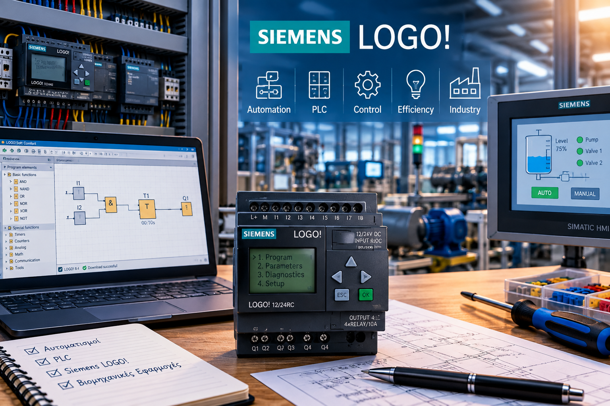
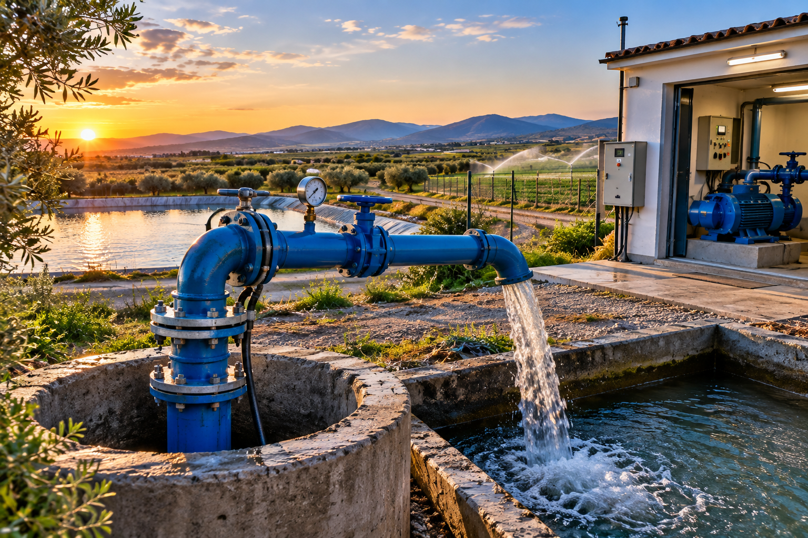

01 / MARINE
Σκάφη & Ναυτιλία
Monitoring, alarms, αντλίες, στάθμες, αισθητήρες νερού/αερίων, μπαταρίες και custom συστήματα ασφαλείας.
Αυτοματισμοί, PLC, τηλεμετρία και ηλεκτρονικά συστήματα για σκάφη, βιομηχανία, αντλιοστάσια και εξειδικευμένες εφαρμογές.
Πρακτικές και αξιόπιστες λύσεις σχεδιασμένες γύρω από τις πραγματικές ανάγκες κάθε εγκατάστασης.
Monitoring, alarms, αντλίες, στάθμες, αισθητήρες νερού/αερίων, μπαταρίες και custom συστήματα ασφαλείας.

Προγραμματισμός Siemens LOGO! και S7-1200, inverters, πίνακες αυτοματισμού και έλεγχος μηχανών.

Έλεγχος στάθμης, πιεστικά, εναλλαγή αντλιών, προστασία ξηράς λειτουργίας, alarms και τηλεμετρία.
Αυτοματισμοί παραγωγής, αισθητήρες, κινητήρες, inverters, fault diagnosis και αναβάθμιση υφιστάμενων εγκαταστάσεων.
Από ένα απλό αυτοματισμό αντλίας μέχρι ολοκληρωμένο σύστημα παρακολούθησης.
Παρακολούθηση στάθμης, θερμοκρασίας, τάσης μπαταριών και κρίσιμων alarms με δυνατότητα απομακρυσμένου ελέγχου.
Σχεδιασμός λογικής ελέγχου, interlocks, timers, alarms, αναλογικά σήματα και custom λειτουργίες.
Ανίχνευση εισροής νερού, καπνού, αερίων και άλλων κρίσιμων καταστάσεων με οπτική και ηχητική ειδοποίηση.
Κάθε εφαρμογή σχεδιάζεται με βάση τον εξοπλισμό, το περιβάλλον και τον τρόπο λειτουργίας της εγκατάστασης.
Έλεγχος και παρακολούθηση κρίσιμων λειτουργιών σκάφους με έμφαση στην ασφάλεια και την αξιοπιστία.
PLC, κινητήρες, inverters, αισθητήρες και αυτοματοποιημένες διαδικασίες για βιομηχανικές εγκαταστάσεις.
Αντλιοστάσια, πηγάδια, δεξαμενές και συστήματα προστασίας με δυνατότητα τηλεμετρίας.
Η Lampou Marine Automation Systems δραστηριοποιείται στον σχεδιασμό, τον προγραμματισμό και την υλοποίηση λύσεων αυτοματισμού, τηλεμετρίας και ηλεκτρονικών συστημάτων.
Με τεχνική εμπειρία σε PLC, Siemens LOGO!, βιομηχανικούς αυτοματισμούς, αντλιοστάσια και ναυτιλιακές εφαρμογές, στόχος είναι κάθε λύση να είναι αξιόπιστη, πρακτική και προσαρμοσμένη στις πραγματικές συνθήκες λειτουργίας.
Από τον σχεδιασμό της λογικής ελέγχου και την κατασκευή του πίνακα μέχρι την εγκατάσταση, τον προγραμματισμό και το troubleshooting, η προσέγγιση είναι ολοκληρωμένη.
Περιγράψτε μας τι θέλετε να αυτοματοποιήσετε και θα εξετάσουμε μαζί την κατάλληλη λύση.